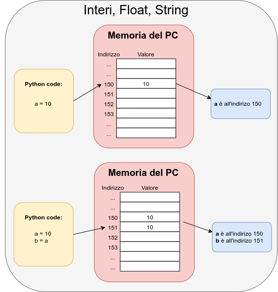
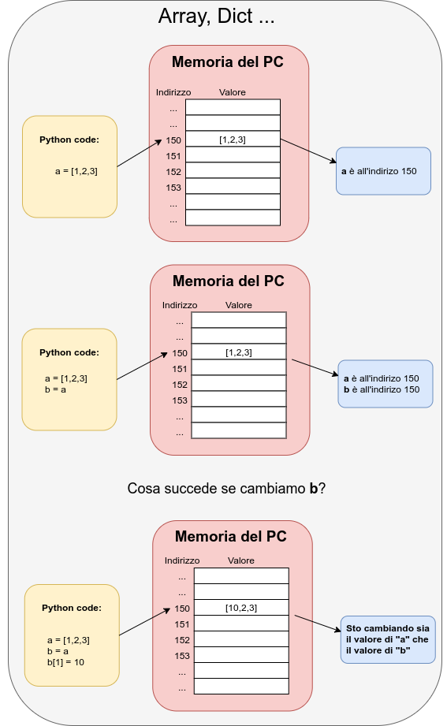

Laboratorio di Informatica¶
La pagina del corso si trova qui:
mentre quella delle esercitazioni si trova qui:
Hint
Se avete dubbi o domande potete rivolgervi a me:
- Antonio Longa: antonio dot longa at unitn dot it
Siete pregati di usare il tag [INF CIBIO] come oggetto della mail. Es: [INF CIBIO] Errore installazione Virtualbox
Bibliografia¶
- Allen Downey, Think python — How to think like a Computer Scientist, Green Tea Press
- https://github.com/AllenDowney/ThinkPythonItalian/raw/master/thinkpython_italian.pdf
- Lutz, Learning Python (5th edition), O’REILLY, 2013.
Note Introduttive¶
- Assumeremo di lavorare esclusivamente con file di testo, indipendentemente dall’estensione dei file.
- La shell e Python non capiscono le lettere accentate, non usatele.
- Il comportamento di alcuni comandi puo’ variare tra varianti diverse di Unix, ad esempio GNU/Linux e MacOS X.
Virtualbox e Ubuntu¶
Virtualbox¶
Virtualbox è un software gratuito e open source per l’esecuzione di macchine virtuali per architettura x86 e 64bit che supporta Windows, GNU/Linux e macOS come sistemi operativi host, ed è in grado di eseguire diversi sistemi operativi guest come Windows, Linux, OS/2 Warp, OpenBSD, FreeBSD, Solaris etc.
Installazione:
- Scaricate Virtualbox dal seguente link https://www.virtualbox.org/wiki/Downloads nella sezione
VirtualBox 6.1.14 platform packages - Lancite l’eseguibile appena scaricato.
Ubuntu¶
Download di Ubuntu:
- Scaricate Ubuntu dal seguente link https://www.ubuntu-it.org/download
- Sceglite la versione Desktop di Ubuntu 20.04.1 LTS (Long Term Support)
Installazione di Ubuntu su VirtualBox¶
Per poter installare Ubutnu in VirtualBox, vi consiglio di seguire il seguente tutorial https://www.youtube.com/watch?v=x3Zpe1rIPFE
Shell: Fondamentali¶
Cosa faremo oggi?¶
{kind=link}
Scorciatoie¶
Alcune dritte per lavorare con la shell:
| combinazione | funzione |
|---|---|
Control-c |
uccide il comando/script in esecuzione |
Tab |
autocompleta comandi e percorsi |
↑, ↓ |
scorrono tra i comandi dati in precedenza |
history |
stampa a schermo la storia dei comandi |
Control-←, Control-→ |
scorrono tra le parole della riga |
Home, End |
saltano all’inizio e alla fine della riga |
Control-l |
pulisce il terminale |
Comando cd¶
Il comando cd permette di muoversi all’interno delle directory.
La sintassi e’:
cd <percorso>
Utilizzando il tasto Tab abbiamo l’autocompletamento dei percorsi!
Il filesystem puo’ essere visto come un albero, simile a questo:
{kind=link}
La posizione di ogni file e directory nel filesystem e’ specificata da un percorso (o path).
Utilizzando il comando cd possiamo muoverci nelle varie catelle.
Supponiamo di voler accedere ad una cartella “folder1” il comando da digitare è il seguente:
cd folder1/
Se si vuole risalire nell’albero del filesystem si utilizza il comando:
cd ..
Comando ls¶
Il comando ls permette di visualizzare il contenuto di un folder
La sintassi e’:
ls [-opzioni] <percorso_1> ... <percorso_n>
Il comando ls ha diverse opzioni (che vedremo tra poco), tuttavia
puo’ essere usato senza specificare nessun opzione.
PROVATE VOI:
ls
ls folder1/
OPZIONI
Ci sono diverse opzioni che prmettono di avere un outup piu dettagliato:
| comando | funzione |
|---|---|
ls -l <percorso> |
fornisce un output dettagliato |
ls -s <percorso> |
stampa la dimensione dei file all’interno del percorso |
ls -t <percorso> |
ordina rispetto all’ultima modifica |
ls --help |
stampa la guida del comando ls |
PROVATE VOI:
ls -l
ls -s
ls -t
ls --help
Le opzioni possono essere combinate semplicemnte concatenando piu opzioni:
ls -lst
>> questo comando restituisce la lista dettagliata dei files ordinati e con la dimensione del file.
Comando man¶
Il comando man permette leggere il manuale di un comando
Per invocare un comando man e’ sufficiente scrivere:
man argomento
ESEMPIO:
man ls
Creare un folder¶
Per creare (MaKe DIRectory) una cartella la sintassi e’:
mkdir NomeDelFile
ESEMPIO:
mkdir file1
Spostare un folder¶
Per spostare (MoVe) una cartella la sintassi e’:
mv percorso_file_in percorso_file_out
ESEMPIO:
mv file1 home/antonio/prova/
Il comando mv viene utilizzato anche per rinominare i file, nel segunete modo:
mv file_vecchio_nome file_nuovo_nome
Copiare un folder¶
Per copiare (CoPy) una cartella la sintassi e’:
cp percorso_file_in percorso_file_out
ESEMPIO:
cp file1 home/antonio/prova/
Eliminare un folder¶
Per eliminare (ReMove) una file la sintassi e’:
rm [opzioni] file
Se si vuole eliminare un folder con tutto il suo contenuto è necessario specificare l’opzione -r
ESEMPIO:
mkdir file1
rm -r file1
Esercizi 10 min¶
- Create una catella chiamata “CIBIO”
- All’interno della catella “CIBIO” create una catella “INF” e una cartella “SPROT”
- Create una catella “MOLECOLE” dentro la cartella “INF”
- Rinominate la cartella “SPORT” in “BIOLOGIA”
- Spostate la catella “MOLECOLE” nella cartella “BIOLOGIA”
TRA 10 min invio le soluzioni nella chat
Soluzioni¶
Create una catella chiamata “CIBIO”:
mkdir CIBIO
All’interno della catella “CIBIO” create una catella “INF” e una cartella “SPROT”:
cd CIBIO mkdir INF mkdir SPORTCreate una catella “MOLECOLE” dentro la cartella “INF”:
cd INF mkdir MOLECOLERinominate la cartella “SPORT” in “BIOLOGIA”:
cd .. mv SPORT BIOLOGIASpostate la catella “MOLECOLE” nella cartella “BIOLOGIA”:
mv INF/MOLECOLE/ BIOLOGIA/
Shell: Parte 1¶
Cosa faremo oggi?¶

Creare un File¶
Per poter creare un file, è necessario disporre di un editor di testo, nel nostro caso usermo
nano un editor utilizzabile da terminale
CREARE/APRIRE UN FILE:
nano nome_del_file.txt
Per poter salvare le mofiche appena effettuate premere Ctrl + S, mentre per chiudere l’editro
premere Ctrl + X
PROVATE VOI
Create un file.txt e scriveteci un paio di righe:
nano file.txt
Ciao mi chiamo bla bla bla ...
Ctrl + S
Ctrl + X
Comando cat¶
Il comando cat permette di visualizzare file testuali:
cat file.txt
PROVATE VOI
Ora provate a leggere il file che avete appena scritto.
Il comando cat stampa a video il contenuto di un file, ma questo puo essere reindirizato su un altra sorgente
ad esempio un file:
cat prova.txt > nuova_prova.txt
il comando permette anche di concatenare piu file in un unico file:
nano prova1.txt
nano prova2.txt
cat prova1.txt prova2.txt > concat_prova_1_2.txt
Ora il file concat_prova_1_2.txt contiene la concatenazione dei file prova1 e prova2.
Wildcards¶
La shell esegue quella che si chiama wildcard expansion: ogni volta che
incontra l’asterisco * lo sostituisce con la lista dei file/directory che
“fanno match”.
ESEMPIO. Se eseguo:
ls *
la shell sostituisce * con la lista di tutti i file e le directory nella
directory attuale (perche’ tutti fanno match con *). Invece:
ls informatica/*
sostituisce * con la lista dei file in informatica.
Supponendo che in informatica ci siano solo tre file, chiamati test1,
test2 e results, il comando precedente sarebbe equivalente a:
ls informatica/test1 informatica/test2 informatica/results
Se avessi eseguito:
ls informatica/test*
la wildcard test* avrebbe fatto match solo con test1 e test2, ed
il comando sarebbe stato equivalente a:
ls informatica/test1 informatica/test2
Qui results non fa match, quindi non viene incluso.
Le wildcard piu’ importanti sono:
| wildcard | fa match con |
|---|---|
akz |
il testo “akz” |
* |
una stringa qualunque (anche vuota) |
? |
un carattere qualunque |
[akz] |
un carattere solo tra a, k e z |
[a-z] |
un carattere alfabetico qualunque |
[0-9] |
una cifra qualunque |
[!1b] |
un carattere qualunque che non sia 1 o b |
[!a-e] |
un carattere qualunque che non sia a, b, …, e |
Quando la shell incontra un comando dove uno (o piu’) degli argomenti contiene delle wildacrds, esegue la wildcard expansion: sostituisce all’argomento incriminato tutti i file che fanno match con la wildcard.
Warning
Le wildcards sono simili alle regex, ma non sono la stessa cosa:
- Le wildcards sono usate dalla shell per fare il match di percorsi.
- Le regex sono usate da
grepper fare il match di righe di testo contenute in un file. - Le regole che determinano il match di wildcards e regex sono diverse.
Esempio. La wildcard:
le rose sono *se
fa match con:
le rose sono rosse
ma anche con:
le rose sono costose
e:
le rose sono grosse
ma non con:
i maneggi abitano in montagna
Le wildcard possono essere combinate, ad esempio:
test?[a-z][!0-9]
fa il match con tutti i percorsi che cominciano con test, proseguono con
un carattere qualunque, poi con un carattere alfabetico ed infine con un
carattere non numerico.
Esempio. Un esempio piu’ realistico. Il comando:
cat data/dna-fasta/*.[12]
fa match con tutti i file nella directory data/dna-fasta il cui filename
e’ composto di una-stringa-qualunque, seguita da un punto, seguito da 1 o
2 e nient’altro. Nel nostro caso i soli file a fare match sono:
data/dna-fasta/fasta.1
data/dna-fasta/fasta.2
Dopo la wildcard expansion il comando precedente diventa:
cat data/dna-fasta/fasta.1 data/dna-fasta/fasta.2
PROVATE VOI create le seguenti directory e sub-directory
- data
- data/deep1
- data/deep1/1
- data/deep2
- data/deep2/1
- data/deep3
- data/deep3/1
- data/deep4
- data/deep4/1
Stampare a schermo i contenuti della directory data:
ls data
Per stampare i contenuti delle directory che stanno in data:
ls data/*
Per stampare a schermo solo il contenuto delle directory deep0, …, deep4:
ls data/deep*
Mentre per restringere la wildcard alle directory deep0 e deep3:
ls data/deep[03]
e solo per le directory deep0, …, deep4 ma non deep2:
ls data/deep[!2]
Esercizi 10 min¶
- Create 3 file usando l editor
nano - Copiate i 3 file usando
cpnel folder “prova” - create un quarto file chiamato concat.txt contenente la concatenzione dei 3 file creati
TRA 10 min invio le soluzioni nella chat
Python: Fondamentali¶
Interprete¶
Python si riferisce a:
- il linguaggio Python, un insieme di regole sintattiche e semantiche che definiscono il comportamento di un programma scritto in Python.
- l’interprete
python, un comando eseguibile dalla shell che permette di eseguire codice scritto nel linguaggio Python.
Per far partire l’interprete, da una shell scrivete:
python3
Vi apparira’ una schermata di testo simile a questa:
Python 3.X.X (default, Sep 14 2017, 22:51:06)
[GCC 5.4.0 20160609] on linux
Type "help", "copyright", "credits" or "license" for more information.
>>>
Per eseguire codice python, scrivetelo nell’interprete e date invio, ad esempio:
print("hello, world!")
Per chiudere l’interprete, premete Control-d in una riga vuota.
Tipi¶
Ogni oggetto Python contiene dei dati, questi dati hanno un tipo (un intero, una stringa, una lista, etc.) sui cui operiamo in qualche modo.
I tipi fondamentali sono:
| Tipo | Significato | Valori |
|---|---|---|
bool |
Condizioni | True, False |
int |
Interi | \{-2^{-31},\ldots,2^{31}-1\} |
float |
Razionali | \mathbb{Q} |
str |
Testo | Testo |
list |
Sequenze | Li vedremo più avanti nel corso |
tuple |
Sequenze | Li vedremo più avanti nel corso |
dict |
Mappe | Li vedremo più avanti nel corso |
set |
Insiemi | Li vedremo più avanti nel corso |
Il comando “type()” restituisce il tipo di un oggetto.
Hint
Nei vari esempi che mostrerò, un comando verra mostrato così:
print("ciao")
L’output verra mostrato così:
>> ciao
Aprite un terminale, e digitate:
python3
Provate i seguenti comandi:
type(1)
>> class 'int'
type("ciao")
>> class 'str'
type(1.0)
>> class 'float'
Primi passi con l’interprete¶
Aprite un terminale, e digitate:
python3
Provate i seguenti comandi:
5 + 3
8 / 2
52 * 8
10 % 3
"Ciao" + "come va?"
Tutto molto bello, ma poco utile! Come possiamo fare a memorizzare i risultati… con le Variabili
Variabili¶
Le variabili sono contenitori di riferimenti ad oggetti. Possono essere viste come nomi per gli oggetti a cui si riferiscono.
Perche dico riferimenti?
nel caso di Stringe Interi Float Boolean …
{kind=link}
nel caso di strutture un po’ più complesse
{kind=link}
Un oggetto viene assegnato ad una variabile con =:
pi = 3.1415926536
Qui la variabile di nome pi si riferisce all’oggetto 3.1415926536 di
tipo float. In sostanza abbiamo deciso che pi e’ un nome per l’oggetto
3.1415926536.
Warning
Il nome della variabile e’ arbitrario!
Lo decidiamo noi in modo che sia conveniente: breve, descrittivo degli oggetti a cui si riferisce, indicativo del ruolo che la variabile svolge nel nostro codice, etc.
Il tipo di una variabile e’ il tipo dell’oggetto a cui si riferisce. Ne segue
che il tipo di pi e’ float.
Warning
La variabile non contiene l’oggetto, ma un riferimento a quell’oggetto.
Per stampare il valore di una variabile, uso la funzione print:
variabile = "sono una esempio"
print(variabile)
Per stampare il tipo di una variabile, uso la funzione type:
variabile = "sono un esempio"
print(type(variabile))
Esempio. Creo una nuova variabile var:
var = 123
Il nome di var e’ var, il suo valore e’ 123, il suo tipo e’ int.
Esempio. Una variabile puo’ essere assignata piu’ volte:
var = 1
var = "MANLFKLGAENIFLGRKAATKEEAIRF"
var = 3.1415926536
Il nome della variabile resta sempre lo stesso, ma tipo e valore cambiano ad
ogni passaggio: controlla con print(var) e print(type(var)).
Documentazione¶
Per visualizzare l’aiuto di un tipo/oggetto/variabile, usa la funzione help,
ad esempio:
help(123)
visualizza l’aiuto degli interi, cioe’ del tipo dell’oggetto 123. Avrei
ottenuto lo stesso risultato con:
x = 123
help(x)
o:
help(int)
L’aiuto si usa come il manuale della shell: posso navigare l’aiuto con le
frecce, cercare un termine con /, e chiudere l’aiuto con q.
Esercizio insieme¶
Calcola il Body Mass Index BMI, prendendo in input peso(kg) ed altezza(m). Usando la seguente formula
BMI = peso / (altezza * altezza)
definiamo le variabili peso e altezza:
peso = 70
altezza = 1.75
calcoliamo il BMI e mettiamolo in una variabile:
BMI = peso / (altezza * altezza)
stampiamo il BMI:
print("il suo BMI è ",BMI)
Esercizi¶
- Calcola il perimetro di un triangolo, con i seguenti lati lato1 = 10,lato2 = 20, lato3 = 50
- Prendi tre variabili di tipo stringa e stampa la loro somma(+).
- Riscrivi il programma per calcolare il BMI e stampa il tipo di peso, altezza e BMI.
- Cerca il metodo split nella documentazione del tipo string (str), successivamente utilizza lo split sulla variabile prova di tipo str contenente “Ciao Come va? Io sto bene” con separatore (sep) = ” “
Soluzioni¶
Calcola il perimetro di un triangolo, con i seguenti lati lato1 = 10,lato2 = 20, lato3 = 50:
lato1 = 10 lato2 = 20 lato3 = 50 perimetro = lato1 + lato2 + lato3 print("Il perimetro è: ",perimetro)
Prendi tre variabili di tipo stringa e stampa la loro somma(+).:
stringa1 = "ciao " stringa2 = "come ti chiami" stringa3 = "?" sum = stringa1 + stringa2 + stringa3 pritn("la concatenazione di:") pritn(stringa1,stringa2,stringa3) print("è ugauale a:", sum)
Riscrivi il programma per calcolare il BMI e stampa il tipo di peso, altezza e BMI.:
peso = 60 altezza = 100
BMI = peso / (altezza * altezza)
print(“il type di peso è”,type(peso)) print(“il type di altezza è”,type(altezza)) print(“il type di BMI è”,type(BMI))
Cerca il metodo split nella documentazione del tipo string (str), successivamente utilizza lo split sulla variabile prova di tipo str contenente “Ciao Come va? Io sto bene” con separatore (sep) = ” “:
help(str) # premi / per cercare # cerca "split" # leggi come utilizzare lo split prova = "Ciao Come va? Io sto bene" print(prova.split(sep=" ")) >>> ["Ciao","Come","va?","Io","sto","bene"]
Python: Moduli¶
Interprete Python¶
Le scorse volte abbiamo lavorato con l’interprete Python, è stato divertente ma poco utile.
A cosa serve l’interprete
- Testare funzioni del quale non ricordimo il funzionamento
- Interrogare la documentazione
- Testare il codice che abbiamo scitto
- Eseguire python in tempo reale (es interrogare database, inviare pacchetti in rete, etc…)
Moduli¶
Un’alternativa all’eseguire codice nell’interprete e’ scrivere un modulo: un
file di testo con estensione .py in cui scrivete il codice da eseguire.
Warning
L’estensione .py e’ obbligatoria!
Per scrivere un modulo, diciamo il file eseguibile.py, devo aprire un editro di testo (es nano, gedit, notepad++ etc),
scrivere il codice python e salvarlo:
eseguibile.py
Per eseguire un modulo, diciamo il file eseguibile.py, scrivo dalla shell:
python eseguibile.py
PROVATE VOI
- Create un file prova.py
- Scrive un semplice programma che fa la somma di 2 numeri e stampate il risultato.
- Lanciate il programa apppena scritto.
Per utilizzare le funzioni definite in un modulo all’interno di un altro, uso
import. Ad esempio, se in eseguibile.py voglio usare la funzione
ordina_proteine() precedentemente definita nel modulo util.py, scrivo
all’inizio di eseguibile.py:
import util
Warning
Quando importate un modulo, omettete l’estensione .py.
A questo punto posso usare ordina_proteine() cosi’:
util.ordina_proteine()
Warning
I contenuti di un modulo importato vengono prefissati col nome del modulo:
qui abbiamo invocato util.ordina_proteine, non ordina_protein liscio.
Esercizi¶
- Create un modulo che calcola i BMI.
- Create un modulo che stampi una frase.
Soluzioni¶
Create un modulo che calcola i BMI.
Aprite un editor di testo Scrivete il seguente codice:
peso = 50 altezza = 160 BMI = peso /(altezza * altezza) print(BMI)
Aprite una shell, raggingete il precorso dove è stato salvato il file ed eseguitelo
Create un modulo che stampi una frase.
Aprite un editor di testo Scrivete il seguente codice:
testo = "Ciao come va" print(testo)
Aprite una shell, raggingete il precorso dove è stato salvato il file ed eseguitelo
Python: Numeri¶
Numeri: Tipi Fondamentali¶
Ci sono tre tipi numerici fondamentali:
| Tipo | Significato |
|---|---|
int |
Rappresenta numeri interi (!) |
float |
Rappresenta numeri razionali a virgola mobile (float ing-point) |
bool |
Rappresenta condizioni, puo’ essere True o False |
Note
I razionali float hanno precisione limitata: la maggior parte dei
razionali puo’ essere rappresentata solo approssimatamente con un
float.
Ai fini di questo corso, i dettagli non sono importanti.
Esempio. Creo tre variabili, una per tipo, poi le stampo a schermo con
print:
n = 10
x = 3.14
cond = False
# Stampo le tre variabili
print(n, x, cond)
# Idem, inframezzando testo
print("n =", n, "x =", x, "e la condizione cond vale", cond)
Questa sintassi di print vale per tutti i tipi di variabili, non solo
quelli numerici.
Numeri: Aritmetica¶
Tutti i tipi numerici mettono a disposizione le stesse operazioni aritmetiche:
| Operazione | Significato |
|---|---|
a + b |
somma |
a - b |
differenza |
a * b |
prodotto |
a / b |
divisione |
a // b |
divisione intera |
a % b |
resto della divisione (o modulo) |
a ** b |
elevamento a potenza |
Il tipo del risultato di n operazione m e’ automaticamente il tipo
piu’ “complesso” tra i tipi di n e m – per questo si parla di
conversione automatica.
La scala di complessita’ dei tipi numerici e’:
bool < int < float
Esempio. Ad esempio, se sommo un int ed un float, otterro’ un
float:
risultato = 1.2 + 1 # float * int
print(risultato) # 1.2
print(type(risultato)) # float
Questo perche’ e’ necessario un float per rappresentare il valore 1.2:
un int non basterebbe!
Warning
Per evitare errori, e’ necessario scegliere il tipo delle variabili in modo che il tipo del risultato sia sufficientemente “complesso” da riuscire a rappresentarne il valore.
Numeri: Confronti¶
Tutti i tipi numerici (e in generale tutto i tipi Python che vedremo durante il corso) supportano le operazioni di comparazione:
| Operazione | Significato |
|---|---|
a == b |
uguale |
a != b |
diverso |
a < b |
minore |
a <= b |
minore o uguale |
a > b |
maggiore |
a >= b |
maggiore o uguale |
Il risultato di un’espressione di confronto e’ sempre un bool: vale
True se la condizione e’ soddisfatta, e False altrimenti.
Esempio. Aritmetica e confronti possono essere combinati per verificare condizioni “complesse”, come questa:
na, nc, ng, nt = 2, 6, 50, 4
risultato = (na + nt) > (nc + ng)
print(risultato)
print(type(risultato))
I valori Booleani bool (es. i risultati delle operazioni di confronto)
possono essere combinati attraverso le operazioni logiche:
| Operazione | Significato |
|---|---|
a and b |
congiunzione: True se e solo se a e b sono True |
a or b |
disgiunzione: True se almeno una tra a e b e’ True |
not a |
negazione: True se a e’ False e viceversa |
Qui sia a che b sono dei bool.
Warning
In generale, fare aritmetica (es. somme) con valori Booleani e costruire espressioni logiche con valori interi o razionali e’ sconsigliato.
In questi casi, Python si comporta in modo (deterministico e spiegabile, ma decisamente) bizzarro.
Esempio. x > 12 e x < 34 danno come risultato dei bool, quindi
le posso combinare per ottenere:
# int int
# | |
print((x > 12) and (x < 34))
# \______/ \______/
# bool bool
# \___________________/
# bool
oppure:
# int int
# | |
print((not (x > 12)) or (x < 34))
# \______/
# bool
# \____________/ \______/
# bool bool
# \________________________/
# bool
Esempi¶
Esempio. Calcolo gli zeri dell’equazione quadratica x^2 - 1 = 0:
a, b, c = 1.0, 0.0, -1.0
delta = b**2 - 4*a*c
zero1 = (-b + delta**0.5) / (2 * a)
zero2 = (-b - delta**0.5) / (2 * a)
print(zero1, zero2)
Qui uso x**0.5 per calcolare la radice quadrata: \sqrt{x} = x^\frac{1}{2}.
Esempio. Voglio calcolare il GC-content di un gene. So che il gene:
- E’ lungo 1521 basi.
- Contiene 316 citosine.
- Contiene 235 guanine.
Simbolicamente, il GC-content e’ definito come (g + c) / n. Per calcolarlo posso scrivere:
n, c, g = 1521, 316, 235
gc_content = (c + g) / n
print(gc_content)
Esempio. Per controllare che x (il cui valore e’ “fuori dal mio
controllo”, ma nell’esempio sotto fisso per convenienza) cada nell’intervallo A
= [10,50] scrivo:
x = 17 # ad esempio
minimo_a, massimo_a, x = 10, 50
dentro_a = (minimo_a <= x <= massimo_a)
print(dentro_a)
oppure:
dentro_a = ((x >= minimo_a) and (x <= massimo_a))
Assumendo che dentro_a, dentro_b e dentro_c indichino che x e’
nell’intervallo A, B o C, rispettivamente, posso comporre condizioni piu’
complesse:
# x e' in almeno uno dei tre intervalli
dentro_almeno_uno = dentro_a or dentro_b or dentro_c
# x e' sia in A e B, ma non in C
dentro_a_e_b_ma_non_c = dentro_a and dentro_b and (not dentro_c)
Esercizi¶
Creare alcune variabili, controllando ad ogni passaggio che valore e tipo siano corretti (usando
printetype):aebcon valore12e23come interi.xeycon valore21e14come razionali.
Usando
print(una sola volta), stampare:- Tutte le variabili di cui sopra sulla stessa riga.
- Tutte le variabili di cui sopra, separate da
;, sulla stessa riga. - Il testo “il prodotto di
aebe’a * b”, sostituendo ada,bea * bi valori delle variabili.
Determinare valore e tipo di:
- Il prodotto di
aeb. - Il quoziente di
xey. - Il quoziente intero di
aeb. - Il quoziente intero di
xey. - Il prodotto di
bey. 2elevato a0.2elevato a1.2.2elevato a-2.- La radice quadrata di
4. - La radice quadrata di
2.
- Il prodotto di
Che differenza c’e’ tra:
10 / 1210 / 12.010 // 1210 // 12.0
Che differenza c’e’ tra:
10 % 310 % 3.0
Usando
pi = 3.141592e dator = 2.5, calcolare:- La circonferenza di raggio
r: 2 \pi r. - L’area di un cerchio di raggio
r: \pi r^2. - Il volume di una sfera di raggio
r: \frac{4}{3} \pi r^3.
- La circonferenza di raggio
Creare due variabili
a = 100eb = True. Usando un numero opportuno di variabili ausiliarie (chiamatele come volete!), fate in modo che il valore diafinisca inbe che quello dibfinisca ina.(Scrivere
a = Trueeb = 100non vale!)Si puo’ fare con una sola variabile ausiliaria?
Sullo stesso strand di DNA si trovano due geni. Il primo include i nucelotidi dalla posizione 10 alla posizione 20, il secondo quelli dalla posizione 30 alla posizione 40. Scriviamo queste informazioni cosi’:
gene1_inizio, gene1_fine = 10, 20 gene2_inizio, gene2_fine = 30, 40
Data una variabile
posche rappresenta una posizione arbitraria sullo strand, scrivere dei confronti per verificare se:possi trova nel primo gene.possi trova nel secondo gene.possi trova tra l’inizio del primo gene e la fine del secondo.possi trova tra l’inizio del primo gene e la fine del secondo, ma in nessuno dei due geni.possi trova prima dell’inizio del primo gene o dopo la fine del secondo.poscade in uno dei due geni.posnon dista piu’ di 10 dall’inizio del primo gene.
Date le tre variabili Booleane
t,u, ev, scrivere delle espressioni che valgonoTruese e solo se:t,u,vtutte e tre vere.te’ vera oppureue’ vera, ma non entrambe.- Esattamente una delle tre variabili e’ falsa.
- Esattamente una delle tre variabili e’ vera.
Soluzioni¶
Soluzioni:
a = 12 b = 23 print(a, b) print(type(a), type(b)) # int, int x = 21.0 y = 14. print(x, y) print(type(x), type(y)) # float, float
Soluzioni:
print(a, b, x, y) print(a, ";", b, ";", x, ";", ...)
Soluzioni:
# casi semplici: prodotto = a * b # int * int print(prodotto) print(type(prodotto)) # int # divisione e divisione intera tra vari # tipi di numeri: quoziente = x / y # float / float print(quoziente) print(type(quoziente)) # float risultato = a // b # int // int print(risultato) print(type(risultato)) # int risultato = x // y # float // float print(risultato) print(type(risultato)) # float risultato = b * y # int * float print(risultato) print(type(risultato)) # float # qui il tipo e' determinato automaticamente # in base alla magnitudine del risultato: risultato = 2**0 # int**int print(risultato) print(type(risultato)) # int risultato = 2**1.2 # int*float print(risultato) print(type(risultato)) # float risultato = 2**-2 # int*int print(risultato) print(type(risultato)) # *** float!!! *** risultato = 4**0.5 # int*float print(risultato) print(type(risultato)) # float risultato = 2**0.5 # int*float print(risultato) print(type(risultato)) # float
Soluzioni:
>>> print(10 / 12) 0.8333333333333334 >>> print(10 / 12.0) 0.8333333333333334 >>> print(10 // 12) 0 >>> print(10 // 12.0) 0.0
Come si vede la divisione intera si comporta normalmente rispetto ai tipi: quando la applico ai due float il risultato e’ quello della divisione normale, ma troncato all’intero
0.Soluzioni:
>>> 10 % 3 1 >>> 10 % 3.0 1.0
Come si puo’ vedere,
%ritorna il resto di10 / 3:10 = 3*3 + 1 # ^ # il resto
Il tipo degli operandi non influenza il valore del risultato, solo il suo tipo.
Soluzione:
pi = 3.141592 r = 2.5 circonferenza = 2 * pi * r print(circonferenza) area = 2 * pi * r**2 print(area) area = 2 * pi * r * r print(area) volume = (4.0 / 3.0) * pi * r**3 print(volume)
Soluzione:
a, b = 100, True a2 = a b2 = b b = a2 a = b2 print(a, b)
oppure:
a, b = 100, True x = a a = b b = x print(a, b)
Soluzione:
gene1_inizio, gene1_fine = 10, 20 gene2_inizio, gene2_fine = 30, 40 # disegnino: # # 5' 3' # ~~~~~xxxxxxxx~~~~~xxxxxxx~~~~~> # 10 20 30 40 # \______/ \_____/ # gene_1 gene_2 # due alternative condizione_1 = (10 <= pos <= 20) condizione_1 = (pos >= 10 and pos <= 20) condizione_2 = (30 <= pos <= 40) condizione_3 = (10 <= pos <= 40) # due alternative condizione_4 = condizione_3 and not (condizione_1 or condizione_2) condizione_4 = (20 <= pos <= 40) condizione_5 = pos < 10 or pos > 40 # occhio che: # # pos < 10 and pos > 40 # # non ha senso: e' sempre False! condizione_6 = condizione_1 or condizione_2 condizione_7 = (0 <= pos <= 20)
Il codice va testato con diversi valori di
posizione, in modo da controllare che le condizioni si comportino come vogliamo: che sianoTruequando la posizione soddisfa i requisiti della domanda, eFalsealtrimenti.Soluzione:
tutte_e_tre = t and u and v t_oppure_u_ma_non_tutte_e_due = (t or u) and not (t and u) # NOTA: qui i backslash alla fine delle righe servono # per andare "a capo", potete ignorarli. una_delle_tre_falsa = \ (t and u and not v) or \ (t and not u and v) or \ (not t and u and v) una_delle_tre_vera = \ (t and not u and not v) or \ (not t and u and not v) or \ (not t and not u and v)
Di nuovo, il codice va testato usando diversi valori per
t,uev. Ci sono 8 combinazioni in tutto:t, u, v = False, False, False t, u, v = False, False, True t, u, v = False, True, False t, u, v = False, True, True # ...
Python: Stringhe¶
Le stringhe sono oggetti immutabili che rappresentano testo.
Per definire una stringa, ho due alternative equivalenti:
var = "testo"
var = 'testo'
Per creare una stringa multilinea posso inserire manualmente i carattere di
a capo \n in ogni riga:
sad_joke = "Time flies like an arrow.\nFruit flies like a banana."
print(sad_joke)
oppure usare le triple virgolette:
sad_joke = """Time flies like an arrow.
Fruit flies like a banana."""
print(sad_joke)
PROVATE VOI:
- Create una variabile con il vostro nome e cognome. ES: name=”Antonio Longa”
- Usate entrambe le virgolette (“” e ‘’), Cosa cambia? se stampate il type cosa cambia?
- Ora create una variabile multilinea con il vostro nome e cognome.
Conversioni Stringa-Numero¶
Posso convertire un numero in una stringa usando str():
n = 10
print(n, type(n))
s = str(n)
print(s, type(s))
int() o float() fanno l’esatto opposto:
n = int("123")
print(n, type(n))
q = float("1.23")
print(q, type(q))
Warning
Se la stringa non descrive un numero del tipo giusto, Python da’ errore:
int("3.14") # Non e' un int
float("giardinaggio") # Non e' un numero
int("1 2 3") # Non e' un numero
int("fifteen") # Non e' un numero
PROVATE VOI:
- Crate 4 variabili
- nome = vostro nome di tipo string
- cognome = vostro cognome di tipo string
- eta = vostra eta di tipo int
- altezza = vostra altezza di tipo float
- Convertite tutto in stringa e stampate la concatenzaione (+).
Operazioni¶
| Ritorna | Operatore | Significato |
|---|---|---|
int |
len(str) |
Restituisce la lunghezza della stringa |
str |
str + str |
Concatena le due stringhe |
str |
str * int |
Replica la stringa |
bool |
str in str |
Controlla se una stringa appare in un’altra |
str |
str[int:int] |
Estrae una sotto-stringa |
Esempio. Concateno due stringhe:
stringa = "una" + " " + "stringa"
lunghezza = len(stringa)
print("la stringa:", stringa, "e' lunga", lunghezza)
Un altro esempio:
stringa = "basta Python!" * 1000
print("la stringa e' lunga", len(stringa), "caratteri")
Warning
Non posso concatenare stringhe con altri tipi. Ad esempio:
var = 123
print("il valore di var e'" + var)
da’ errore. Due alternative funzionanti:
print("il valore di var e'" + str(var))
oppure:
print("il valore di var e'", var)
(Nel secondo caso manca uno spazio tra e' e 123.)
PROVATE VOI
- Crate 3 variabili
- nome = vostro nome di tipo string
- cognome = vostro cognome di tipo string
- eta = vostra eta di tipo int
- Stampate il vostro nome età volte, stmpate il vostro cognome un numero di volte uguale alla metà dei vostri anni. Es: se avete 4 anni, il risultato sarà “AntonioAntonioAntonioAntonio” e “LongaLonga”
- Cosa succede se avete un età dispari? :)
Esempio. L’operatore sottostringa in stringa controlla se
sottostringa appare una o piu’ volte in stringa, ad esempio:
stringa = "A beautiful journey"
print("A" in stringa) # True
print("beautiful" in stringa) # True
print("BEAUTIFUL" in stringa) # False
print("ul jour" in stringa) # True
print("Gengis Khan" in stringa) # False
print(" " in stringa) # True
print(" " in stringa) # False
Il risultato e’ sempre True o False.
PROVATE VOI
- Dato il seguente frammento di DNA
- DNA = “acactcgagacaatcttggtatcggtctacgcctcgcatcgattaggtgattgtggagcgt
- cgggagtatggtatcaagcgaacttaatcctttatgtaaaggcgctttggatctttgaaga ccagccacgtgcccgctgaccgacagctcagaacataacacgttggtcgttacccggctaa gcgaaaacgggatggggcgtcgcttcggattacccgattctgaatattcgtgtaagcattg cccgtacatttgtgactatatgagtaggaacgaccttgcgtccaaagaagtttagttggtt caacgaattaacagcctagcacatagctaagtacgtcggttcatatggcccctcaccataa”
- Cercate se contiene le seguenti sottostringhe
- atcgattaggtgattgtggagcgtcggg
- atcg
- ggggg
- ATCG
Esempio. Per estrarre una sottostringa si usa l’indicizzazione:
# 0 -1
# |1 -2|
# ||2 -3||
# ||| ... |||
alfabeto = "abcdefghijklmnopqrstuvwxyz"
print(alfabeto[0]) # "a"
print(alfabeto[1]) # "b"
print(alfabeto[len(alfabeto)-1]) # "z"
print(alfabeto[len(alfabeto)]) # Errore
print(alfabeto[10000]) # Errore
print(alfabeto[-1]) # "z"
print(alfabeto[-2]) # "y"
print(alfabeto[0:1]) # "a"
print(alfabeto[0:2]) # "ab"
print(alfabeto[0:5]) # "abcde"
print(alfabeto[:5]) # "abcde"
print(alfabeto[-5:-1]) # "vwxy"
print(alfabeto[-5:]) # "vwxyz"
print(alfabeto[10:-10]) # "klmnop"
Warning
L’estrazione e’ inclusiva rispetto al primo indice, ma esclusiva rispetto
al secondo. In altre parole alfabeto[i:j] equivale a:
alfabeto[i] + alfabeto[i+1] + ... + alfabeto[j-1]
Notate che alfabeto[j] e’ escluso.
Warning
Occhio che l’estrazione restituisce una nuova stringa, lasciando l’originale invariata:
alfabeto = "abcdefghijklmnopqrstuvwxyz"
sottostringa = alfabeto[2:-2]
print(sottostringa)
print(alfabeto) # Resta invariato
PROVATE VOI
- Usate il DNA definito prima.
- Create una variabile (ultimi10) contenente gli ultimi 10 caratteri del DNA
- Create una variabile (primi30) contenente i primi 30 caratteri del DNA
- Create una terza variabile (var) contenente la concatenazione delle variabili ultimi10 e primi30 ripetuta 10 volte.
- Cercate all’interno della variabile var la stringa agct.
Metodi¶
oggetto.metodo(parametri)
| Ritorna | Metodo | Significato |
|---|---|---|
str |
str.upper() |
Restituisce la stringa in maiuscolo |
str |
str.lower() |
Restituisce la stringa in minuscolo |
str |
str.strip(str) |
Rimuove stringhe ai lati |
str |
str.lstrip(str) |
Rimuove stringhe a sinistra |
str |
str.rstrip(str) |
Rimuove stringhe a destra |
bool |
str.startswith(str) |
Controlla se la stringa comincia per un’altra |
bool |
str.endswith(str) |
Controlla se la stringa finisce per un’altra |
int |
str.find(str) |
Restituisce la posizione di una sotto-stringa |
int |
str.count(str) |
Conta il numero di ripetizioni di una sotto-stringa |
str |
str.replace(str, str) |
Rimpiazza sotto-stringhe |
Warning
Proprio come l’estrazione, i metodi restituiscono una nuova stringa, lasciando l’originale invariata:
alfabeto = "abcdefghijklmnopqrstuvwxyz"
alfabeto_maiuscolo = alfabeto.upper()
print(alfabeto_maiuscolo)
print(alfabeto) # Resta invariato
Esempio. upper() e lower() sono molto semplici:
testo = "no yelling"
risultato = testo.upper()
print(risultato)
risultato = risultato.lower()
print(risultato)
Esempio. Le varianti di strip() lo sono altrattanto:
testo = " un esempio "
print(testo.strip()) # equivale a testo.strip(" ")
print(testo.lstrip()) # equivale a testo.lstrip(" ")
print(testo.rstrip()) # equivale a testo.rstrip(" ")
print(testo) # testo e' invariato
Notate che lo spazio tra "un" ed "esempio" non viene mai rimosso. Posso
passare piu’ di un carattere da rimuovere:
"AAAA un esempio BBBB".strip("AB")
PROVATE VOI
- prendete i primi 100 caratteri del DNA definito in precedenza, salvateli in una variabile chiamata sequenza.
- mettete tutto in maiuscolo
- rimuovete le “a” all’inizio e alla fine.
- qunato è lunga la nuova stringa?
Esempio. Lo stesso vale per startswith() e endswith():
testo = "123456789"
print(testo.startswith("1")) # True
print(testo.startswith("a")) # False
print(testo.endswith("56789")) # True
print(testo.endswith("5ABC9")) # False
Esempio. find() restituisce la posizione della prima occorrenza di
una sottostringa, oppure -1 se la sottostringa non appare mai:
testo = "123456789"
print(testo.find("1")) # 0
print(testo.find("56789")) # 4
print(testo.find("Q")) # -1
Esempio. replace() restituisce una copia della stringa dove una
sottostringa viene rimpiazzata con un’altra:
testo = "se le rose sono rosse allora"
print(testo.replace("ro", "gro"))
Esempio. Data la stringa “sporca” di aminoacidi:
sequenza = ">MAnlFKLgaENIFLGrKW "
voglio sbarazzarmi del carattere ">", degli spazi, e poi convertire
il tutto in maiuscolo per uniformita’:
s1 = sequenza.lstrip(">")
s2 = s2.rstrip(" ")
s3 = s2.upper()
print(s3)
In alternativa, tutto in un passaggio:
print(sequenza.lstrip(">").rstrip(" ").upper())
Perche’ funziona? Riscriviamolo con le parentesi:
print(( ( sequenza.lstrip(">") ).rstrip(" ") ).upper())
\_____________________/
str
\_____________________________________/
str
\_____________________________________________/
str
Come vedere, il risultato di ciascuno metodo e’ una stringa, proprio come
sopra lo erano s1, s2 e s3; e su queste posso invocare i metodi
delle stringhe.
Esercizio insieme¶
- Considerando la segente stringa in input: DNA = “ttggtatcggtctacgcctcgcatcgattaggtgattgtgga”
- Convertiamo la stringa in maiuscolo.
- Contiamo le occorrenze di timina, guanina, citosina e adenina, salvandole in variabili con nomi opportuni.
- Stampiamo la media delle loro frequnze
- Quante volte compare il codone “ttg”?
- Convertiamo la sequenza del DNA in forma estesa. cioè: t diventa timina, g diventa guanina etc etc etc
Esercizi¶
Come faccio a:
Creare una stringa che abbia, come testo, cinque spazi.
Controllare che una stringa contenga almeno uno spazio.
Controllare che una stringa contenga cinque caratteri.
Creare una stringa vuota, e controllare che sia vuota.
Creare una stringa che contenga cento ripetizioni di
Python e' bello tra la la.Date le stringhe
"ma biologia","molecolare"e"e' meglio", creare una stringa composta"ma biologia molecolare e' meglio"e poi replicarla mille volte.Controllare se la stringa
"12345"comincia con il carattere 1.Creare una stringa che contenga il solo carattere
\. Controllate conprint, elen()!Controllare che il carattere
xappaia almeno tre volte all’inizio o alla fine di una stringa. Ad esempio, questo e’ vero per:"x....xx" # 1 + 2 >= 3 "xx....x" # 2 + 1 >= 3 "xxxx..." # 4 + 0 >= 3
Ma non per:
"x.....x" # 1 + 1 < 3 "...x..." # 0 + 0 < 3 "......." # 0 + 0 < 3
Data la stringa:
s = "0123456789"
Quali delle seguenti estrazioni sono corrette?
s[9]s[10]s[:10]s[1000]s[0]s[-1]s[1:5]s[-1:-5]s[-5:-1]s[-1000]
Creare una stringa che contenga letteralmente le seguenti due righe di testo, inclusi apici e virgolette:
urlo’: “non farti vedere mai piu’!”
“d’accordo”, rispose il bassotto.
Ci sono almeno due modi per farlo.
Calcolare il valore di 1/7 in Python, ottenendo un
float; mettere il risultato ottenuto nella variabilevalore. Controllare se:- Vi appare la cifra 9.
- I primi sei decimali sono uguali ai secondi sei?
Hint: si puo’ risolvere facilmente l’esercizio convertendo
valoredafloatastr.Date le stringhe:
stringa = "a 1 b 2 c 3" digit = "DIGIT" character = "CHARACTER"
rimpiazzare tutte le cifre con il testo della variabile
digit, e tutti i caratteri alfabetici con quello dicharacter.Opzionalmente, fare tutto in una sola riga di codice.
Data la sequenza primaria della catena A della Tumor Suppressor Protein TP53, riportata qui sotto:
chain_a = """SSSVPSQKTYQGSYGFRLGFLHSGTAKSVTCTYSPALNKM FCQLAKTCPVQLWVDSTPPPGTRVRAMAIYKQSQHMTEVV RRCPHHERCSDSDGLAPPQHLIRVEGNLRVEYLDDRNTFR HSVVVPYEPPEVGSDCTTIHYNYMCNSSCMGGMNRRPILT IITLEDSSGNLLGRNSFEVRVCACPGRDRRTEEENLRKKG EPHHELPPGSTKRALPNNT"""
- Di quante righe e’ composta la sequenza? (Hint: e’ sufficiente contare quanti caratteri di a capo ci sono, e poi …)
- Quanto e’ lunga la sequenza? (Non l’intera stringa: tenete conto dell’esercizio precedente.)
- Rimuovere i caratteri di a capo e mettere il risultato in una nuova
variabile
sequenza. Controllare se le risposte ai punti precedenti sono corrette. - Quante cisteine
"C"ci sono nella sequenza? Quante istidine"H"? - La catena contiene la sotto-sequenza
"NLRVEYLDDRN"? In che posizione? - Come posso usare
find()e l’estrazione[i:j]per estrarre la prima riga della stringachain_a?
Data (una piccola parte) della sequenza terziaria della catena A di TP53:
structure_chain_a = """SER A 96 77.253 20.522 75.007 VAL A 97 76.066 22.304 71.921 PRO A 98 77.731 23.371 68.681 SER A 99 80.136 26.246 68.973 GLN A 100 79.039 29.534 67.364 LYS A 101 81.787 32.022 68.157"""
Ogni riga rappresenta un atomo C_\alpha del backbone della struttura. Di quell’atomo sono riportati, in ordine: il codice del residuo cui appartiene, la catena a cui appartiene (sempre
"A"nel nostro caso), la posizione del residuo nella sequenza primaria, e le coordinate x,y,z del residuo nello spazio tridimensionale.Estrarre la seconda riga usando
find()e l’estrazione[i:j], e metterla in una nuova variabileriga.Estrarre le coordinate del residuo, e metterle in tre variabili
x,y, ez.Ripetere il tutto per la terza riga, e mettere le coordinate in
x_prime, y_prime, z_prime.Calcolare la distanza Euclidea tra i due residui:
d((x,y,z),(x',y',z')) = \sqrt{(x-x')^2 + (y-y')^2 + (z-z')^2}
Hint: per calcolare la distanza e’ necessario usare dei
float.
- Scaricate il file da questo link https://drive.google.com/drive/folders/1MfpXoSSOwrqAGmCQ0cnlZ5P8ERMjc7BG?usp=sharing
Il comando:
dna = open(“data/dna-fasta/fasta.1”).readlines()[2] print(dna)
legge le sequenze di nucleotidi contenute nel file
data/dna-fasta/fasta.1(a patto chepythonsia stato lanciato nella directory giusta) e restituisce una stringa, che noi mettiamo nella variabiledna.- La stringa in
dnae’ vuota? Quanto e’ lunga? Contiene dei caratteri di a capo? (In caso affermativo, rimuoverli.) - I primi tre caratteri sono identici agli ultimi tre?
- I primi tre caratteri sono palindromi rispetto agli ultimi tre?
- Sostituire
AconAde,CconCyt, etc. facendo in modo che i singoli residui siano separati da spazi" ". Mettere il risultato in una nuova variabiledna_espanso.
Soluzioni¶
Note
In alcune soluzioni uso il carattere \ alla fine di una riga di codice.
Usato in questo modo, \ spiega a Python che il comando continua alla
riga successiva. Se non usassi \, Python potrebbe pensare che il
comando finisca li’ e quindi che sia sintatticamente sbagliato – dando
errore.
Potete tranquillamente ignorare questi \.
Soluzioni:
Soluzione:
# 12345 testo = " " print(testo) print(len(testo))
Soluzione:
almeno_uno_spazio = " " in testo # controllo che funzioni print(" " in "nonc'e'alcunospazio") print(" " in "c'e'unsolospazioqui--> <--") print(" " in "ci sono parecchi spazi")
Soluzione:
esattamente_cinque_caratteri = len(testo) == 5 # controllo che funzioni print(len("1234") == 5) print(len("12345") == 5) print(len("123456") == 5)
Soluzione:
stringa_vuota = "" print(len(stringa_vuota) == 0)
Soluzione:
base = "Python e' bello tra la la" ripetizioni = base * 100 # mi assicuro che almeno la lunghezza sia giusta print(len(ripetizioni) == len(base) * 100)
Soluzione:
parte_1 = "ma biologia" parte_2 = "molecolare" parte_3 = "e' meglio" testo = (parte_1 + " " + parte_2 + " " + parte_3) * 1000
Provo cosi’:
comincia_con_1 = "12345".startswith(1)
ma Python mi da’ errore:
Traceback (most recent call last): File "<stdin>", line 1, in <module> TypeError: startswith first arg must be str or a tuple of str, not int # ^^^^^^^^^^^^^^^^^^^^^ ^^^^^^^
L’errore ci dice (vedi parte evidenziata) che
startswith()richiede che l’argomento sia una stringa, non un intero come nel nostro caso: noi invece le abbiamo passato1, che e’ un intero.La soluzione quindi e’:
comincia_con_1 = "12345".startswith("1") print(comincia_con_1)
che vale
True, come mi aspettavo.Soluzione:
stringa = "\\" stringa print(stringa) print(len(stringa)) # 1
Gia’ controllato nell’esercizio sopra, la risposta e’ no. Verifichiamo comunque:
backslash = "\\" print(backslash*2 in "\\") # False
Primo metodo:
backslash = "\\" condizione = testo.startswith(backslash) or \ testo.endswith(backslash)
Secondo metodo:
condizione = (testo[0] == backslash) or \ (testo[-1] == backslash)
Soluzione:
condizione = \ testo.startswith("xxx") or \ (testo.startswith("xx") and testo.endswith("x")) or \ (testo.startswith("x") and testo.endswith("xx")) or \ testo.endswith("xxx")
Vale la pena di controllare usando gli esempi nell’esercizio.
Soluzione:
s = "0123456789" print(len(s)) # 10
Quali delle seguenti estrazioni sono corrette?
s[9]: corretta, estrae l’ultimo carattere.s[10]: invalida.s[:10]: corretta, estrae tutti i caratteri (ricordate che in secondo indice,10in questo caso, e’ esclusivo.)s[1000]: invalida.s[0]: corretta, estrae il primo carattere.s[-1]: corretta, estrae l’ultimo carattere.s[1:5]: corretta, estrae dal secondo al sesto carattere.s[-1:-5]: corretta, ma non estrae niente (gli indici sono invertiti!)s[-5:-1]: corretta, estrae dal sesto al penultimo carattere.s[-1000]: invalida.
Soluzione (una di due):
testo = """urlo': \"non farti vedere mai piu'!\" \"d'accordo\", rispose il bassotto."""
Soluzione:
valore = 1.0 / 7.0 print(valore) # 0.14285714285714285 valore_come_stringa = str(valore) print(valore_come_stringa) # "0.14285714285714285" print("9" in valore_come_stringa) # False indice_punto = valore_come_stringa.find(".") primi_sei_decimali = valore_come_stringa[indice_punto + 1 : indice_punto + 1 + 6] secondi_sei_decimali = valore_come_stringa[indice_punt + 1 + 6 : indice_punti + 1 + 6 + 6] print(primi_sei_decimali == secondi_sei_decimali) # True
Soluzione:
stringa = "a 1 b 2 c 3" digit = "DIGIT" character = "CHARACTER" risultato = stringa.replace("1", digit) risultato = risultato.replace("2", digit) risultato = risultato.replace("3", digit) risultato = risultato.replace("a", character) risultato = risultato.replace("b", character) risultato = risultato.replace("c", character) print(risultato) # "CHARACTER DIGIT CHARACTER ..."
In una sola riga:
print(stringa.replace("1", digit).replace("2", digit) ...)
Soluzione:
chain_a = """SSSVPSQKTYQGSYGFRLGFLHSGTAKSVTCTYSPALNKM FCQLAKTCPVQLWVDSTPPPGTRVRAMAIYKQSQHMTEVV RRCPHHERCSDSDGLAPPQHLIRVEGNLRVEYLDDRNTFR HSVVVPYEPPEVGSDCTTIHYNYMCNSSCMGGMNRRPILT IITLEDSSGNLLGRNSFEVRVCACPGRDRRTEEENLRKKG EPHHELPPGSTKRALPNNT""" numero_righe = chain_a.count("\n") + 1 print(numero_righe) # 6 # NOTA: qui voglio la lunghezza della *sequenza*, non della *stringa* lunghezza_sequenza = len(chain_a) - chain_a.count("\n") print(lunghezza_sequenza) # 219 sequenza = chain_a.replace("\n", "") print(len(chain_a) - len(sequenza)) # 5 (giusto) print(len(sequenza)) # 219 num_cisteine = sequenza.count("C") num_istidine = sequenza.count("H") print(num_cisteine, num_istidine) # 10, 9 print("NLRVEYLDDRN" in sequenza) # True print(sequenza.find("NLRVEYLDDRN")) # 106 # controllo print(sequenza[106 : 106 + len("NLRVEYLDDRN")]) # "NLRVEYLDDRN" indice_primo_acapo = chain_a.find("\n") prima_riga = chain_a[:indice_primo_acapo] print(prima_riga)
Soluzione:
structure_chain_a = """SER A 96 77.253 20.522 75.007 VAL A 97 76.066 22.304 71.921 PRO A 98 77.731 23.371 68.681 SER A 99 80.136 26.246 68.973 GLN A 100 79.039 29.534 67.364 LYS A 101 81.787 32.022 68.157""" # uso una variabile di nome piu' corto per comodita' chain = structure_chain_a indice_primo_a_capo = chain.find("\n") indice_secondo_a_capo = chain[indice_primo_a_capo + 1:].find("\n") + len(chain[:indice_primo_a_capo + 1]) indice_terzo_a_capo = chain[indice_secondo_a_capo + 1:].find("\n") + len(chain[:indice_secondo_a_capo + 1]) print(indice_primo_a_capo, indice_secondo_a_capo, indice_terzo_a_capo) seconda_riga = chain[indice_primo_a_capo + 1 : indice_secondo_a_capo] print(seconda_riga) # "VAL A 97 76.066 22.304 71.921" # | | | | | | # 01234567890123456789012345678 # 0 1 2 x = seconda_riga[9:15] y = seconda_riga[16:22] z = seconda_riga[23:] print(x, y, z) # NOTA: sono tutte stringhe terza_riga = chain[indice_secondo_a_capo + 1 : indice_terzo_a_capo] print(terza_riga) # "PRO A 98 77.731 23.371 68.681" # | | | | | | # 01234567890123456789012345678 # 0 1 2 x_prime = terza_riga[9:15] y_prime = terza_riga[16:22] z_prime = terza_riga[23:] print(x_prime, y_prime, z_prime) # NOTA: sono tutte stringhe # converto tutte le variabili a float, altrimenti non posso calcolare i # quadrati e la radice quadrata (ne' tantomeno le differenze) x, y, z = float(x), float(y), float(z) x_prime, y_prime, z_prime = float(x_prime), float(y_prime), float(z_prime) diff_x = x - x_prime diff_y = y - y_prime diff_z = z - z_prime distanza = (diff_x**2 + diff_y*82 + diff_z**2)**0.5 print(distanza)
La soluzione si semplifica moltissimo potendo usare
split():righe = chain.split("\n") seconda_riga = righe[1] terza_riga = righe[2] parole = seconda_riga.split() x, y, z = float(parole[-3]), float(parole[-2]), float(parole[-1]) parole = terza_riga.split() x_prime, y_prime, z_prime = float(parole[-3]), float(parole[-2]), float(parole[-1]) distanza = ((x - x_prime)**2 + (y - y_prime)**2 + (z - z_prime)**2)**0.5
Soluzione:
dna = open("data/dna-fasta/fasta.1").readlines()[2] print(len(dna) > 0) # False print(len(dna)) # 61 print("\n" in dna) # True # rimuovo gli 'a capo' dna = dna.strip() print(dna[:3]) # "CAT" print(dna[-3:]) # "CTT" print(dna[:3] == dna[-3:]) # False print((dna[0] == dna[-1] and \ dna[1] == dna[-2] and \ dna[2] == dna[-3])) # False risultato = dna.replace("A", "Ade ") risultato = risultato.replace("C", "Cyt ") risultato = risultato.replace("G", "Gua ") risultato = risultato.replace("T", "Tym ") print(risultato) # "Cyt Ade Tym ..."
Python: Liste¶
Le liste rappresentano sequenze ordinate di oggetti arbitrari.
Warning
Le liste sono mutabili!
Per definire una lista uso le parentesi quadre:
# Una lista di interi (anche ripetuti)
alcuni_interi = [1, 2, 1, 1, 9]
# Una lista di stringhe
proteine_uniprot = ["Y08501", "Q95747"]
# Una lista mista
cose = ["Y08501", 0.13, "Q95747", 0.96]
# Una lista di liste
lista_di_liste = [
["Y08501", 120, 520],
["Q95747", 550, 920],
]
# La lista vuota
una_lista_vuota = []
Warning
Le liste possono contenere elementi ripetuti:
[3, 3, 3, "a", "a", "a"] != [3, "a"]
e l’ordine degli elementi conta:
[1, 2, 3] != [3, 2, 1]
Operazioni¶
| Ritorna | Operatore | Significato |
|---|---|---|
range |
range(int, [int]) |
Restituisce un intervallo di interi |
int |
len(list) |
Restituisce la lunghezza della lista |
list |
list + list |
Concatena le due liste |
list |
list * int |
Replica la lista |
bool |
object in list |
Contolla se un oggetto arbitrario appare nella lista |
list |
list[int:int] |
Estrae una sotto-lista |
list |
list[int] = object |
Sostituisce un elemento della lista |
Esempio. Uso range() per costruire una lista di interi:
>>> intervallo = range(0, 5)
>>> lista = list(intervallo)
>>> print(lista)
[0, 1, 2, 3, 4]
range(5) fa la stessa cosa.
Esempio. La sostituzione di un elemento funziona solo se l’indice corrisponde ad un elemento gia’ esistente:
lista = [0, 1, 2, 3, 4]
lista[0] = "primo"
print(lista) # ["primo", 1, 2, 3, 4]
lista[-1] = "ultimo"
print(lista) # ["primo", 1, 2, 3, "ultimo"]
lista[100] = "oltre l'ultimo" # Errore!
Esercizi¶
Creare una lista vuota. Controllare che sia vuota con
len().Creare una lista con i primi cinque interi non-negativi:
0,1, etc. usandorange().Creare una lista con cento elementi
0.Hint: replicate una lista con un solo elemento.
Date:
lista_1 = list(range(10)) lista_2 = list(range(10, 20))
concatenare le due liste e mettere il risultato in una nuova lista
lista_completa. Quanto vale? E’ uguale al risultato dilist(range(20))?Creare una lista con tre stringhe:
"sono","una","lista". Poi stampare a schermo tipo e lunghezza dei tre elementi, uno per uno.Data:
lista = [0.0, "b", [3], [4, 5]]
Quanto e’ lunga
lista?Di che tipo e’ il primo elemento di
lista?Quanto e’ lungo il secondo elemento di
lista?Quanto e’ lungo il terzo elemento di
lista?Quanto vale l’ultimo elemento di
lista? Quanto e’ lungo?La lista ha un elemento di valore
"b"?La lista ha un elemento di valore
4?Hint: usate
inper controllare.
Che differenza c’e’ tra le seguenti “liste”?:
lista_1 = [1, 2, 3] lista_2 = ["1", "2", "3"] lista_3 = "[1, 2, 3]"
Hint: la terza e’ una lista?
Quali dei seguenti frammenti sono validi/errati?
(Dopo ogni punto, cancellate la lista
listacondel, per evitare problemi con i punti successivi)lista = []lista = [}lista = [[]]lista.append(0)lista = []; lista.append(0)lista = [1 2 3]lista = list(range(3)),elemento = lista[3]lista = list(range(3)),elemento = lista[-1]lista = list(range(3)),sottolista = lista[0:2]lista = list(range(3)),sottolista = lista[0:3]lista = list(range(3)),sottolista = lista[0:-1]lista = list(range(3)),lista[2] = "due"lista = list(range(3)),lista[3] = "tre"lista = list(range(3)),lista[-1] = "tre"lista = list(range(3)),lista[1.2] = "uno virgola due"lista = list(range(3)),lista[1] = ["testo-1", "testo-2"]
Data la lista:
matrice = [ [1, 2, 3], # <-- prima riga [4, 5, 6], # <-- seconda riga [7, 8, 9], # <-- terza riga ] # ^ ^ ^ # | | | # | | +-- terza colonna # | | # | +----- seconda colonna # | # +-------- prima colonna
Come faccio a:
- Estrarre la prima riga?
- Estrarre il secondo elemento della prima riga?
- Sommare gli elementi della prima riga?
- Creare una nuova lista con gli elementi della la seconda colonna?
- Creare una nuova lista con gli elementi la diagonale maggiore?
- Creare una lista concatenando la prima, seconda, e terza riga?
Metodi¶
| Ritorna | Metodo | Significato |
|---|---|---|
None |
list.append(object) |
Aggiunge un elemento alla fine della lista |
None |
list.extend(list) |
Estende una lista con un’altra lista |
None |
list.insert(int,object) |
Inserisce un elemento in una posizione arbitraria |
None |
list.remove(object) |
Rimuove la prima ripetizione di un valore |
None |
list.reverse() |
Inverte la lista |
None |
list.sort() |
Ordina la lista |
int |
list.count(object) |
Conta il numero di ripetizioni di un valore |
Warning
Tutti i metodi delle liste (escluso count()):
- Modificano la lista stessa.
- Restituiscono
None.
Questo comportamento e’ l’esatto opposto di cio’ che accade con i metodi delle stringhe!
Una conseguenza e’ che fare qualcosa come:
print(lista.append(10))
non ha senso, perche’ print stampa il risultato di append(),
che e’ sempre None!
Per lo stesso motivo non possiamo fare:
lista.append(1).append(2).append(3)
perche’ il primo append() restituisce None – che non e’ una
lista, e non possiamo farci append()!
Esempio. append() aggiunge in coda:
lista = list(range(10))
print(lista) # [0, 1, 2, ..., 9]
lista.append(10)
print(lista) # [0, 1, 2, ..., 9, 10]
Notate come lista sia stata modificata! Se invece faccio:
lista = list(range(10))
risultato = lista.append(10)
print(risultato) # None
Come ci aspettavamo, append() restituisce None.
Lo stesso vale per extend():
lista = list(range(10))
risultato = lista.extend(list(range(10, 20)))
print(lista) # [0, 1, 2, ..., 19]
print(risultato) # None
Per inserire elementi in una posizione arbitraria, uso insert():
lista = list(range(10))
risultato = lista.insert(2, "un altro valore")
print(lista) # [0, 1, "un altro valore", 3, ...]
print(risultato) # None
remove() invece prende un valore, non una posizione:
lista = ["una", "lista", "non", "una", "stringa"]
risultato = lista.remove("una")
print(lista) # ["lista", "non", "una", "stringa"]
print(risultato) # None
Anche sort() e reverse() modificano la lista stessa:
lista = [3, 2, 1, 5, 4]
risultato = lista.reverse()
print(lista) # [4, 5, 1, 2, 3]
print(risultato) # None
risultato = lista.sort()
print(lista) # [1, 2, 3, 4, 5]
print(risultato) # None
Invece count() non modifica affatto la lista, e restituisce un int:
lista = ["a", "b", "a", "b", "a"]
risultato_a = lista.count("a") # 3
risultato_b = lista.count("b") # 2
print("ci sono", risultato_a, "a, e", risultato_b, "b")
Esempio. Contrariamente ad append() e soci, la concatenazione non
modifica la lista originale:
lista_1 = list(range(0, 10))
lista_2 = list(range(10, 20))
# usando la concatenazione +
lista_completa = lista_1 + lista_2
print(lista_1, "+", lista_2, "->", lista_completa)
# usando extend()
lista_completa = lista_1.extend(lista_2)
print(lista_1, "estesa con", lista_2, "->", lista_completa)
Nel primo caso tutto funziona come vorrei; nel secondo lista_1 e’ estesa
con lista_2 (che resta invariata), mentre lista_completa vale None.
Warning
Le liste sono mutabili, e contengono riferimenti ad oggetti.
Questi due fatti possono dare luogo ad effetti complicati – che esploriamo nei prossimi esercizi.
Esempio. Questo codice:
sottolista = list(range(5))
lista = [sottolista]
print(lista)
crea una lista lista che contiene una lista sottolista come elemento.
Quando modifico sottolista, che e’ una lista e quindi e’ mutabile, finisco
inavvertitamente per modificare anche lista!:
sottolista.append(5)
print(sottolista)
print(lista)
Esempio. Questo codice mostra un’altra anomalia:
lista = list(range(5))
print(lista)
finta_copia = lista # copio solo il *riferimento* a lista!
print(finta_copia)
lista.append(5)
print(lista)
print(finta_copia) # Ooops!
Questo accade perche’ lista_1 e lista_2 si riferiscono allo stesso
oggetto lista. Se voglio creare una copia reale della lista lista,
scrivo:
lista = list(range(5))
print(lista)
copia_vera = list(lista)
# oppure
# copia_vera = [elem for elem in lista]
print(copia_vera)
lista.append(5)
print(lista)
print(copia_vera)
Esercizi¶
Inserire nella lista
listaprima un intero, poi una stringa, poi una lista.Warning
La lista deve esistere gia’ prima di poterci fare
append(),extend(),insert(), etc.. Ad esempio:>>> una_lista_che_non_ho_mai_definito.append(0)
da’ errore:
Traceback (most recent call last): File "<stdin>", line 1, in <module> NameError: name 'una_lista_che_non_ho_mai_definito' is not defined
Partendo (per ogni punto) da:
lista = list(range(3))
cosa fanno i seguenti frammenti di codice? (Ripartite ogni volta da
lista = list(range(3)).)lista.append(3)lista.append([3])lista.extend([3])lista.extend(3)lista.insert(0, 3)lista.insert(3, 3)lista.insert(3, [3])lista.insert([3], 3)
Che differenza c’e’ tra:
lista = [] lista.append(list(range(10))) lista.append(list(range(10, 20)))
e:
lista = [] lista.extend(list(range(10))) lista.extend(list(range(10, 20)))
Di che lunghezza e’
listanei due casi?Che cosa fa questo codice?:
lista = [0, 0, 0, 0] lista.remove(0)
Che cosa fa questo codice?:
lista = [1, 2, 3, 4, 5] lista.reverse() lista.sort()
Posso riscriverlo cosi’?:
lista = [1, 2, 3, 4, 5] lista.reverse().sort()
Data la lista:
lista = list(range(10))
mettere in
lista_inversagli elementi dilistain ordine inverso (dall’ultimo al primo) usandoreverse().listanon deve essere alterata.Data la lista:
frammenti = [ "KSYK", "SVALVV" "GVTGI", "VGSSLAEVLKLPD", ]
mettere in
frammenti_ordinatigli elementi diframmentiordinati alfanumericamente consort().frammentinon deve essere alterata.(Una Curiosita’ Inutile). Che “struttura” ha questa lista?:
lista = [] lista.append(lista)
Metodi Stringhe-Liste¶
| Ritorna | Metodo | Significato |
|---|---|---|
list-of-str |
str.split(str) |
Rompe una stringa in una lista di stringhe |
str |
str.join(list-of-str) |
Ricompone una lista di stringhe in una stringa |
Esempio. La lista di stringhe:
tabella = [
"nome,cognome,numero di premi nobel vinti",
"Albert,Einstein,1",
"Marie,Curie,2",
]
che riporta informazioni su personaggi noti in tre colonne separate da
virgole ",".
Estraggo i titoli delle colonne dall’intestazione (la prima riga della
tabella) con split():
titoli_colonne = tabella[0].split(",")
print(titoli_colonne)
print(type(titoli_colonne))
e calcolo quante colonne ci sono:
num_colonne = len(titoli_colonne)
Esempio. join() e’ utile per ricomporre liste di stringhe, ad
esempio:
lista_di_stringhe = ["uno", "due", "tre"] * 100
print(type(lista_di_stringhe), lista_di_stringhe)
stringa_intera = " ".join(lista_di_stringhe)
print(type(stringa_intera), stringa_intera)
Warning
Quando uso join(), la lista deve contenere stringhe! Questo
non funziona:
" ".join([1, 2, 3])
Esercizi¶
Data la stringa:
testo = """The Wellcome Trust Sanger Institute is a world leader in genome research."""
mettere le parole di
testoin una lista di stringhe. Poi stampare a schermo quante parole contiene.Poi mettere in
prima_rigala prima riga ditesto.Fare la stessa cosa con
seconda_riga.Estrarre la prima parola di
seconda_rigae stamparla a schermo.La tabella di stringhe:
tabella = [ "protein | database | domain | start | end", "YNL275W | Pfam | PF00955 | 236 | 498", "YHR065C | SMART | SM00490 | 335 | 416", "YKL053C-A | Pfam | PF05254 | 5 | 72", "YOR349W | PANTHER | 353 | 414", ]
presa da Saccharomyces Genome Database, rappresenta una lista di (informazioni su) domini identificati nella sequenza di alcune proteine del lievito.
Ogni riga e’ un dominio, tranne la prima (che fa da intestazione).
Usando
split()ottenere una lista dei titoli delle varie colonne, avendo cura di accertarsi che le stringhe che corrispondono ai titoli non contengano spazi superflui.Hint: non e’ necessario usare
strip().Data la lista di stringhe:
parole = ["parola_1", "parola_2", "parola_3"]
costruire, usando solo
join()ed un opportuno delimitatore le seguenti stringhe:"parola_1 parola_2 parola_3""parola_1,parola_2,parola_3""parola_1 e parola_2 e parola_3""parola_1parola_2parola3"r"parola_1\parola_2\parola_3"
Data la lista di stringhe:
versi = [ "Taci. Su le soglie", "del bosco non odo", "parole che dici", "umane; ma odo", "parole piu' nuove", "che parlano gocciole e foglie", "lontane." ]
usare
join()per creare una stringa multi-linea con i versi inversi.Il risultato ("poesia") deve essere:>>> print(poesia) Taci. Su le soglie del bosco non odo parole che dici umane; ma odo parole piu' nuove che parlano gocciole e foglie lontane.
Hint: che delimitatore devo usare?
List Comprehension¶
La list comprehension permette di trasformare e/o filtrare una lista.
Data una lista qualunque lista_originale, posso creare una nuova lista
che contiene solo gli elementi che soddisfano una certa condizione:
lista_filtrata = [elemento
for elemento in lista_originale
if condizione(elemento)]
Qui condizione() ce la inventiamo noi.
Esempio. Creo una nuova lista contenente solo i numeri pari da 0 a 9:
numeri = range(10)
numeri_pari = [numero for numero in numeri
if numero % 2 == 0]
print(numeri_pari)
Esempio. Data la lista di sequenze nucleotidiche:
sequenze = ["ACTGG", "CCTGT", "ATTTA", "TATAGC"]
tengo solo le sequenze che contengono almeno una adenosina:
sequenze_con_a = [sequenza for sequenza in sequenze
if "A" in sequenza]
print(sequenze_con_a)
Per tenere solo quelle che non contengono adenosina, nego la condizione:
sequenze_senza_a = [sequenza for sequenza in sequenze
if not "A" in sequenza]
print(sequenze_senza_a)
Esempio. Se ometto la condizione, cosi’:
lista_2 = [elemento for elemento in lista]
ottengo una copia di lista.
Esempio. Uso una lista di liste per descrivere una rete di regolazione tra geni:
microarray = [
["G1C2W9", "G1C2Q7", 0.2],
["G1C2W9", "G1C2Q4", 0.9],
["Q6NMS1", "G1C2W9", 0.8],
# ^^^^^^ ^^^^^^ ^^^
# gene1 gene2 correlazione
]
Ogni lista “interna” ha tre elementi: i primi due sono identificativi di geni di A. Thaliana, il terzo e’ una misura di correlazione tra l’espressione dei due geni in un qualche microarray.
Posso usare una list comprehension per tenere solo le coppie di geni con correlazione alta:
geni_altamente_correlati = \
[tripla[:-1] for tripla in microarray if tripla[-1] > 0.75]
oppure ottenere i geni che sono altamente coespressi con il gene "G1C2W9":
soglia = 0.75
geni_coespressi = \
[tripla[0] for tripla in microarray
if tripla[1] == "G1C2W9" and tripla[-1] >= soglia] + \
[tripla[1] for tripla in microarray
if tripla[0] == "G1C2W9" and tripla[-1] >= soglia]
Warning
Il nome della variabile che itera sugli elementi (nell’esempio sopra,
elemento) e’ arbitrario. Questo codice:
intervallo = range(10)
print([x for x in intervallo if x > 5])
e’ identico a questo:
intervallo = range(10)
print([y for y in intervallo if y > 5])
Il nome della variabile, x o y, e’ immateriale.
La list comprehension puo’ essere usata anche per creare una nuova lista
che contiene gli elementi di lista_originale trasformati (uno per uno,
individualmente) in qualche modo:
lista_trasformata = [trasforma(elemento)
for elemento in lista_originale]
Qui trasforma() e’ una “trasformazione” che ci inventiamo noi.
Esempio. Dato l’intervallo:
numeri = range(10)
creo una nuova lista con i loro doppi:
doppi = [numero * 2 for numero in numeri]
# ^^^^^^^^^^
# trasformazione
print(doppi)
Esempio. Data la lista di percorsi relativi alla directory data/:
percorsi = ["aatable", "fasta.1", "fasta.2"]
prefisso il percorso "data/" a ciascun elemento:
percorsi_completi = ["data/" + percorso
for percorso in percorsi]
print(percorsi_completi)
Esempio. Data la lista di sequenze primarie:
sequenze = [
"MVLTIYPDELVQIVSDKIASNK",
"GKITLNQLWDIS",
"KYFDLSDKKVKQFVLSCVILKKDIE",
"VYCDGAITTKNVTDIIGDANHSYS",
]
metto in una lista nuova lunghezze le lunghezze di ciascuna sequenza,
in ordine:
lunghezze = [len(sequenza) for sequenza in sequenze]
print(lunghezze)
Esempio. Data una lista di stringhe:
atomi = [
"SER A 96 77.253 20.522 75.007",
"VAL A 97 76.066 22.304 71.921",
"PRO A 98 77.731 23.371 68.681",
"SER A 99 80.136 26.246 68.973",
"GLN A 100 79.039 29.534 67.364",
"LYS A 101 81.787 32.022 68.157",
]
che rappresenta (parte della) struttura terziaria di una catena proteica,
voglio ottenere una lista di liste che contiene, per ogni residuo (stringa)
in atomi, le sue coordinate (tre elementi).
Scrivo:
coordinate = [riga.split()[-3:] for riga in atomi]
ed ottengo:
>>> print(coordinate)
[
["77.253", "20.522", "75.007"],
["76.066", "22.304", "71.921"],
["77.731", "23.371", "68.681"],
["80.136", "26.246", "68.973"],
["79.039", "29.534", "67.364"],
["81.787", "32.022", "68.157"],
]
Come funziona questo codice? Consideriamo la prima riga di``atomi``:
"SER A 96 77.253 20.522 75.007"
Quando la list comprehension incontra questa riga, fa questo:
riga = "SER A 96 77.253 20.522 75.007"
poi applica la trasformazione riga.split()[-3:], i cui passaggi sono:
>>> print(riga.split())
["SER", "A", "96", "77.253", "20.522", "75.007"]
# ^^^^^^^^ ^^^^^^^^ ^^^^^^^^
# -3 -2 -1
>>> print(riga.split()[-3:])
["77.253", "20.522", "75.007"]
quindi il risultato della trasformazione applicata a questa riga e’ la lista:
["77.253", "20.522", "75.007"]
Questa lista viene appesa a coordinate.
A questo punto la list comprehension prende la seconda seconda riga di atomi:
"VAL A 97 76.066 22.304 71.921"
la mette in riga, ed applica la stessa trasformazione, ottenendo la lista:
["76.066", "22.304", "71.921"]
che appende a coordinate.
Poi prende la terza riga di atomi, etc.
Infine, posso combinare filtro e trasformazione per creare una nuova lista che
contiene solo gli elementi di lista_originale che soddisfano una certa
condizione, ma trasformati in qualche modo:
nuova_lista = [trasforma(elemento)
for elemento in lista_originale
if condizione(elemento)]
Esempio. Dati gli interi da 0 a 10, voglio tenere solo quelli pari e dividerli per 3:
pari_diviso_3 = [float(numero) / 3
for numero in range(10)
if numero % 2 == 0]
Notate che la condizione opera su numero (l’elemento originale della lista
oridinale, non trasformato), non su float(numero) / 3.
Warning
La list comprehension costruisce una nuova lista, lasciando l’originale inalterata, sia quando filtro:
numeri = range(10)
numeri_pari = [numero
for numero in lista_originale
if numero % 2 == 0]
print(numeri, "e' lunga", len(numeri))
print(numeri_pari, "e' lunga", len(numeri_pari))
sia quando trasformo:
numeri = range(10)
doppi = [numero * 2 for numero in numeri]
print(numeri)
print(doppi)
Esercizi¶
Warning
Nei prossimi esercizi, se open() da’ errore e’ probabile che non
abbiate fatto partire il terminale dalla directory giusta. Ad esempio
in questo caso:
>>> righe = open("file/che/non/esiste").readlines()
Python da’ (giustamente) errore:
Traceback (most recent call last):
File "<stdin>", line 1, in <module>
IOError: [Errno 2] No such file or directory: 'file/che/non/esiste'
# ^^^^^^^^^^^^^^^^^^^^^^^^^ ^^^^^^^^^^^^^^^^^^^^^
# non esiste questo file! nome del file
Assicuratevi di adattare il percorso in base alla directory nella quale vi trovate.
Data la lista:
lista = list(range(100))
Creare una nuova lista
lista_piu_3contenente il valore degli elementi dilistapiu’3. Il risultato deve essere:[3, 4, 5, ...]
Creare una nuova lista
lista_disparicontenente solo gli elementi dispari dilista. Il risultato deve essere:[1, 3, 5, ...]
Hint: un intero e’ dispari se e solo se il risultato di:
numero % 2e’
1.Creare una nuova lista
lista_opposticontenente l’opposto aritmetico (l’opposto di x e’ -x) degli elementi dilista. Il risultato deve essere:[0, -1, -2, ...]
Creare una nuova lista
lista_inversicontenente l’inverso aritmetico (l’inverso aritmetico di x e’ \frac{1}{x}) degli elementi dilista. Se l’inverso di un elemento non esiste, l’elemento deve essere ignorato (non comparire inlista_inversi). Il risultato deve essere:[1, 0.5, 0.33334, ...]
Hint: l’unico intero senza un inverso e’ 0.
Creare una nuova lista contenente solo il primo e l’ultimo elemento di
lista. Il risultato deve essere:[0, 99]
Hint: si fa con una list comprehension?
Creare una nuova lista contenente tutti gli elementi di
listatranne il primo e l’ultimo. Il risultato deve essere:[1, 2, ..., 97, 98]
Contare quanti numeri dispari ci sono in
lista. Il risultato deve essere50.Hint: basta usare una list comprehension?
Creare una nuova lista contenente tutti gli elementi di
listadivisi per 5 (anche quelli non divisibili per 5!). Il risultato deve essere:[0.0, 0.2, 0.4, ...]
Creare una nuova lista
lista_multipli_5_divisicontenente solo i multipli di 5, ma divisi per 5. Il risultato deve essere:[0.0, 1.0, 2.0, ..., 19.0]
Creare una nuova lista
lista_di_stringhecontenente tutti gli elementi dilistama convertiti in stringhe. Il risultato deve essere:["0", "1", "2", ...]
Contare quante stringhe rappresentanti un numero dispari ci sono in
lista_di_stringhe.Creare una stringa che contenga tutti gli elementi di
lista, visti come stringhe, e separati da uno spazio. Il risultato deve essere:"0 1 2 ..."Hint: basta usare una list comprehension?
Per ciascuno dei punti seguenti, scrivere due list comprehension che producano
lista_1dalista_2e viceversa.lista_1 = [1, 2, 3] lista_2 = ["1", "2", "3"]
lista_1 = ["nome", "cognome", "eta'"] lista_2 = [["nome"], ["cognome"], ["eta'"]]
lista_1 = ["ACTC", "TTTGGG", "CT"] lista_2 = [["actc", 4], ["tttgggcc", 6], ["ct", 2]]
Data la lista:
lista = list(range(10))
quali dei seguenti frammenti sono validi o errati, e cosa fanno?
[x for x in lista][y for y in lista][y for x in lista]["x" for x in lista][str(x) for x in lista][x for str(x) in lista][x + 1 for x in lista][x + 1 for x in lista if x == 2]
Data la lista di stringhe
dnarestituita da:dna = open("data/dna-fasta/fasta.1").readlines() print(dna)
- Creare una nuova lista di stringhe che contenga tutte le stringhe in
dnatranne quella di intestazione (la riga che comincia per">"). - Ci sono caratteri di a capo o spazi nella lista di stringhe ottenuta? Se si’, creare una nuova lista di stringhe che sia identica a quella ottenuta, ma dove le stringhe non contengano caratteri di a capo ne’ spazi.
- Concatenare in una singola stringa tutte le righe ottenute.
- Calcolare la percentuale di citosina e guanina nella sequenza ottenuta.
- Calcolare il GC-content della sequenza.
- Creare una nuova lista di stringhe che contenga tutte le stringhe in
Consideriamo la stringa:
risultato_cdhit = """\ >Cluster 0 0 >YLR106C at 100.00% >Cluster 50 0 >YPL082C at 100.00% >Cluster 54 0 >YHL009W-A at 90.80% 1 >YHL009W-B at 100.00% 2 >YJL113W at 98.77% 3 >YJL114W at 97.35% >Cluster 52 0 >YBR208C at 100.00% """
ottenuta raggruppando le strutture primarie del genoma di S. Cerevisiae (preso da SGD) con un software di clustering (CD-HIT).
risultato_cdhitcodifica in forma testuale alcuni cluster di proteine raggruppate in base alla similarita’ delle loro sequenze.Un gruppo comincia con la riga:
>Cluster N
dove
Ne’ il numero del cluster. I contenuti del cluster sono dati dalle righe successive, ad esempio:>Cluster 54 0 >YHL009W-A at 90.80% 1 >YHL009W-B at 100.00% 2 >YJL113W at 98.77% 3 >YJL114W at 97.35%
rappresenta un gruppo di quattro sequenze, denominato
"Cluster 54": di quel gruppo fanno parte la proteina"YHL009W-A"con una similarita’ del90.80%, la proteina"YHL009-B"con una similarita’ del100.00%, etc.Data
risultato_cdhit, usare delle list comprehension per:Estrarre i nomi dei vari cluster. Il risultato deve essere:
>>> print(nomi_cluster) ["0", "50", "54", "52"]
Estrarre i nomi di tutte le proteine (non importa se ci sono doppioni). Il risultato deve essere:
>>> print(proteine) ["YLR1106C", "YPL082C", "YHL00W-A", ...]
Estrarre le coppie proteina-percentuale per tutte le proteine. il risultato deve essere:
>>> print(coppie_proteina_percentuale) [["YLR106C", 100.0], ["YPL082C", 100.0], ["YHL009W-A", 90.8], # ... ]
Il comando:
righe = open("data/prot-pdb/1A3A.pdb").readlines() print(" ".join(righe)) # stampo le righe print(len(righe)) # 5472
restituisce una lista di righe del file
data/prot-pdb/1A3A.pdb, preso dalla Protein Data Bank. Descrive una proteina di E. Coli.Hint: aprite il file con un editor di testo (
nano,gedit, quello che preferite) e fatevi un’idea dei contenuti prima di procedere!Estrarre tutte le righe che cominciano per
"SEQRES"e mettere il risultato nella listarighe_seqres.Dovrebbero esserci esattamente
48righe di questo tipo. Il risultato deve somigliare a questo:>>> print(" ".join(righe_seqres)) SEQRES 1 A 148 MET ALA ASN LEU PHE LYS LEU GLY ALA GLU ASN ILE PHE SEQRES 2 A 148 LEU GLY ARG LYS ALA ALA THR LYS GLU GLU ALA ILE ARG SEQRES 3 A 148 PHE ALA GLY GLU GLN LEU VAL LYS GLY GLY TYR VAL GLU # ... SEQRES 10 D 148 LEU THR ASN ALA LEU ASP ASP GLU SER VAL ILE GLU ARG SEQRES 11 D 148 LEU ALA HIS THR THR SER VAL ASP GLU VAL LEU GLU LEU SEQRES 12 D 148 LEU ALA GLY ARG LYS # ^ ^^^^^^^^^^^^^^^^^^^^^^^^^^^^^^^^^^^^^^^^^^^^^^^^^^^ # catena sequenza primaria della catena
La prima colonna delle righe in
righe_seqrese’ sempre"SEQRES"(per costruzione), la terza e’ il nome della catena di 1A3A descritta in quella riga, mentre le colonne dalla quinta in poi descrivono la sequenza primaria della catena stessa.Estrarre le catene da
righe_seqres(non importa se ci sono doppioni).Il risultato deve essere:
>>> print(catene) ["A", ..., "B", ..., "C", ..., "D", ...]
Estrarre solo le righe della catena B e metterle in
righe_seqres_B. Devono esserci esattamente12righe.Estrarre da
righe_seqres_Bla sequenza della catena B e metterla in una sola stringasequenza_B.Il risultato deve essere:
>>> print(sequenza_B) "MET ALA ASN LEU PHE ... ALA GLY ARG LYS"
Estrarre da
righetutte le righe che cominciano per"HELIX"e mettere il risultato nella listarighe_helix.Devono esserci esattamente
30righe di questo tipo. Il risultato deve somigliare a questo:>>> print(" ".join(righe_helix)) HELIX 1 1 ALA A 9 ASN A 11 5 3 HELIX 2 2 LYS A 21 LYS A 34 1 14 HELIX 3 3 PRO A 40 LEU A 52 5 13 HELIX 4 4 VAL A 68 ARG A 73 5 6 HELIX 5 5 HIS A 111 ALA A 121 1 11 # ^^^^^^^^^^ ^^^^^^^^^^ # inizio elica fine elica
La prima colonna delle righe in
righe_helixe’ sempre"HELIX"(per costruzione). Ogni riga descrive una \alpha-helix della proteina 1A3A.La quarta, quinta e sesta colonna descrivono il residuo dal quale parte l’elica: tipo del residuo, catena di riferimento, e posizione del residuo.
La settima, ottava e nona colonna descrivono il residuo dove finisce l’elica: sempre con tipo, catena e posizione.
Estrarre una lista
info_elichein cui ogni elemento rappresenta un’elica, e ne contiene la posizione di inizio, la posizione di fine, e la lunghezza.
Data la matrice 3\times 3:
matrice = [list(range(0,3)), list(range(3,6)), list(range(6,9))]
- Mettere in una lista
prima_rigala prima riga. - Mettere in una lista
prima_colonnala prima colonna. - Creare una matrice
sottosoprache contenga le righe dimatricema sottosopra. - (Difficile.) Creare una matrice
palindromoche contenga le righe dimatricema da destra a sinistra. - (Difficile.) Ricreare
matricecon una sola list comprehension.
- Mettere in una lista
(Difficile). Data la lista:
lista = range(100)
Creare una lista
lista_quadraticontenente i quadrati degli elementi dilista. Il risultato deve essere:[0, 1, 4, 9, ...]
Poi creare una lista
lista_differenze_quadratiche contenga, nella posizionei-esima il valore:lista_quadrati[i+1] - lista_quadrati[i]
per tutti, tranne l’ultimo, valore di
lista_quadrati. E’ consigliabile usare piu’ di un passaggio, ed eventualmente liste ausiliarie.(Che numeri avete ottenuto? Ecco perche’.)
Python: Fake Test¶
Giunti a questo punto, dovreste essere capaci di fare il seguente esercizio:
Esercizio¶
Scrivete un modulo python che data in input la sequente seq di DNA:
DNA = "tatgtaaactgccaaggtgaacgttggaatcacctcgtatgtgactcgcgtgtgacctggatactgtcaaaccaggtcaggaaagcctatgagtacgagc"
- conti le frequenze di a,c,g,t normalizzate (numero di occorrenze di a diviso lunghezza della stringa. Es: se ci sono 30 “a” e la stringa è lunga 60, la frequenaza normalizzata di “a” è uguale a 30/60 = 0.5)
- stampi il DNA ordinato (es “aaaaaaaaaccccccccgggggggttttt”)
- create un array chiamato array_DNA, contenente la frequenza del aminoacido corrisponedete. Es se le frequnze sono a=0.20,c=0.30,g=0.10,t=0.40, e il DNA è del tipo “atgc…”, dovete creare l’array [0.2,0.4,0.1,0.3,…]
- Create un array con la media mobile del array chiamato array_DNA. La media mobile è un array dove l’elemento in posizione i rappresenta la media degli elementi in posizione 0,1,2,..,i-1,i. Es se l’array in input è [1,1,4,5], l’array contenente le medie mobile è il seguente: [1,1,2,2.75] perche [1/1 = 1, (1+1)/2 = 1, (1+1+4)/3 = 2, (1+1+4+5)/4 = 2.75]
In fine stampate i 4 risultati, un esempio di output del programma è il seguente:
res1 freq a = 0.28 freq c = 0.27 freq g = 0.22 freq t = 0.23
res2 aaaaaaaaaaaaaaaaaaaaaaaaaaaaccccccccccccccccccc....
res3 [0.23, 0.28, 0.23, 0.27, 0.23 ...
res4 [0.23, 0.255, 0.24666666666666667, 0.2525, 0.248 ....
L’esercizio è interamente risolvibile con quello cha abbiamo fatto fino a qui
Video¶
Questa pagina contiene i link ai video di ogni lezione.